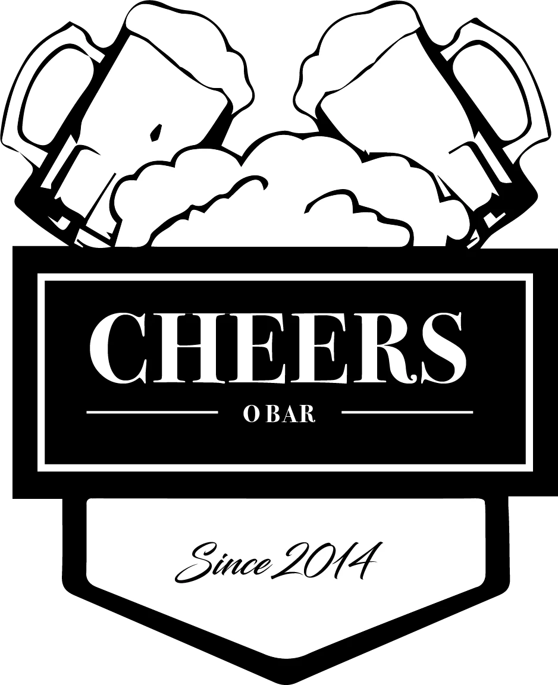

O TEU LUGAR NA EQUIPABom jogo.
Bom jogo.
Melhor cocktail.
Do primeiro apito ao último ponto. Escolhe o teu próximo favorito.
Explorar o menu ↗FUTEBOL · PADEL · TÉNIS · GOOD TIMES

OS FAVORITOS DA CASA
Aqui joga-se pelo sabor.O trio titular.
Rivais no campo.
À mesma mesa.
O resultado fica no campo. A boa companhia vem contigo.
Heineken ★Jack Daniel’sNordésRed BullCoca-Cola